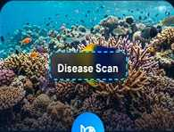
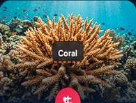
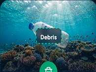
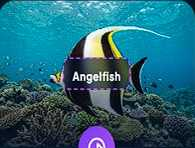
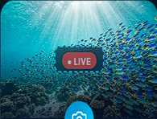
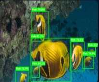

Disease ScanDisease Detection
Detect and classify fish using deep learning.

Disease ScanDetect and classify fish using deep learning.

CoralIdentify and monitor coral health and species.

DebrisDetect and track marine debris and waste.

AngelfishIdentify and classify marine fish species.

● LIVECapture real-time fish images and monitor the ecosystem.
Live results feed with bounding boxes, pathology observations, and object counters
Upload underwater imagery, inspect actual inference responses, or open the illustrative reference results.
JPG · PNG · WebP · Up to 12 MB
Images are sent to your configured local Python API. If the detector is unavailable, no AI predictions are claimed.

Select a monitoring module to upload a real photo for analysis.
Review your processed results and download reports and annotated images.
Open the same camera scanner seen in your presentation screenshots.
An LLM-Augmented CNN Framework for Real-Time Underwater Fish Species and Marine Debris Identification
Proposed pipeline: underwater image capture → contrast enhancement and noise reduction → CNN feature extraction → Mask R-CNN segmentation → semantic interpretation → annotated output. This project prototype currently supports quality metrics and an optional experimental object detection model. Mask R-CNN, a validated fish disease classifier and specialist species recognition need dedicated datasets, models and evaluation.
Presented by: Sri Ram V, Rassika G, Vidhya D.
Guided by: Dr. T. Ananth Kumar, ASP / Dept. of CSE, IFET College of Engineering.